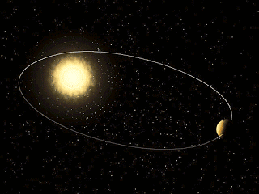

La ley de gravitación universal, formulada por Isaac Newton en 1687, establece que todos los cuerpos del universo se atraen mutuamente con una fuerza que es directamente proporcional al producto de sus masas e inversamente proporcional al cuadrado de la distancia entre ellos. Esta ley explica fenómenos como la caída de los objetos hacia la Tierra y el movimiento de los planetas alrededor del Sol.
La fórmula matemática que describe esta ley es:
F = G * (m1 * m2) / r²
Donde:
Esta ley es fundamental para entender el comportamiento de los cuerpos celestes y ha sido confirmada por numerosas observaciones y experimentos a lo largo de los siglos. La gravitación universal no solo explica la órbita de los planetas, sino también fenómenos como las mareas, la formación de galaxias y la estructura del universo.
